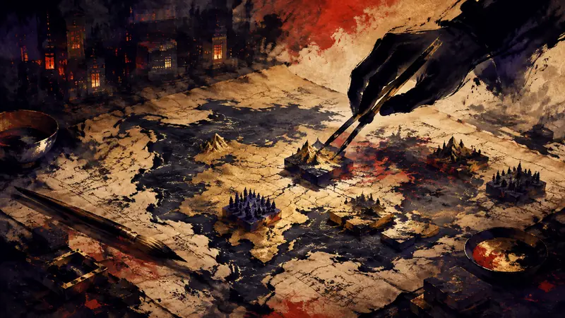
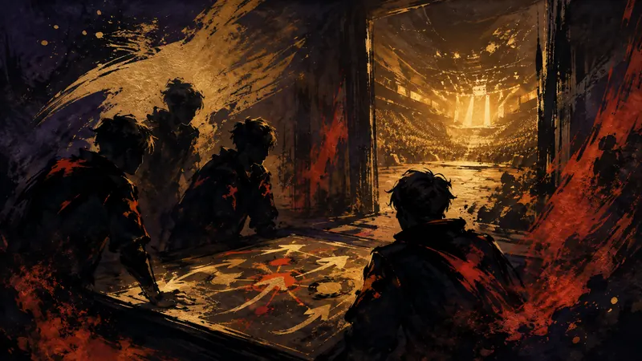

政策
欧盟依据《数字服务法》指定 ChatGPT、Reddit 与 Roblox（译）
来源：歐盟執委會 Digital Strategy
Roblox 与 ChatGPT 同时跨过 4,500 万用户门槛，平台责任也随之升级。
对玩家的影响：玩家可以期待平台更明确地评估非法内容、未成年人风险与身心健康影响，但也可能遇到更多内容治理、年龄判定或账号处理措施。
观点：这项指定让 Roblox 从单纯的游戏服务，进入必须说明大型平台风险的制度位置。
先鸦｜黎明快讯
玩家能动性：政策如何限制它、产业如何塑造它、叙事设计如何实现它。
前线
政策
来源：歐盟執委會 Digital Strategy
Roblox 与 ChatGPT 同时跨过 4,500 万用户门槛，平台责任也随之升级。
对玩家的影响：玩家可以期待平台更明确地评估非法内容、未成年人风险与身心健康影响，但也可能遇到更多内容治理、年龄判定或账号处理措施。
观点：这项指定让 Roblox 从单纯的游戏服务，进入必须说明大型平台风险的制度位置。
前线
巴哈姆特 GNN
30 万张、每张 10 枚邮票，宝可梦将随 2026 年台北世界邮展进入收藏市场。
观点：这类收藏品提供的是拥有与纪念的乐趣，不必被解读成玩家必须集齐的另一套清单。
인벤 Inven（韓國，韓語）
沉寂 20 多年的《鬼武者》首日销量突破 100 万套，Capcom 的怀旧牌真的奏效了吗？
观点：沉睡 IP 被重新拿出来，会让老玩家获得回到熟悉世界的机会，也可能让市场再次把怀旧当成安全牌。
인벤 Inven（韓國，韓語）

从 2005 年结束服务到在 Steam 重现，《Tactical Commanders R》首先要通过 9 至 10 月的封闭测试。
观点：老游戏复活，给了玩家重新检验经典系统的机会，但封测页面只代表计划向前推进了一步，不能为正式品质作保证。
Inside Games
新宝可梦、异色版本和两只超级进化宝可梦同时登场，这周的收集目标明显变多。
观点：新目标让玩家可以重新安排这段时间要追什么，但也把游玩节奏绑得更紧，错过活动就可能少一项限时收集。
巴哈姆特 GNN
宝可梦主题区域的合作已经确认，但真正能让玩家买单的，还是未来现场究竟能玩到什么。
观点：这类合作增加的是一个接近熟悉游戏世界的实体入口，并不会直接增加玩家在游戏中的控制权。
觸樂

从线上选拔到上海集训，选手面对的考验不只在操作，也在重新学会比赛。
观点：竞赛让玩家看到，熟悉的游戏如何在不同规则下重新变成需要学习的东西；观众的乐趣也不只来自胜负，而是看选手如何承担选择。
前线
4Gamer.net
5,000美元的目标变成超过34,000美元，宇宙恐怖桌游仍有一群愿意提前下注的玩家。
观点：众筹成功让玩家多了一个可以共同投入的桌游选择，但也将一部分风险交给了提前支持者。
4Gamer.net
15 万份愿望单迎来正式上市，未来都市里的室内农园开始接受玩家亲手经营。
观点：愿望单数字代表很多人愿意保留一种可能性，却不等于他们承诺会长期游玩。
4Gamer.net
980日元就能踏进神话怪物的组队冒险，但低价格不会替玩法做保证。
观点：低门槛价格让玩家可以用较小成本试试一个新概念，但便宜不该被转成必须立刻购买的理由。
巴哈姆特 GNN
《空之轨迹 the 2nd》延续熟悉旅程，真正的新鲜感藏在新增内容如何改变节奏。
观点：重制系列给熟悉原作的玩家一条回到旧旅程的路，也让新玩家有机会从较新的界面进入长篇故事。
觸樂
创作者想保留自己的声音，市场却要求作品先证明自己值得被理解。
观点：玩家享受作者的奇思妙想，也有权在作品不合胃口时离开，这两件事可以同时成立。
遊研社
一套课桌椅、一颗篮球和一堂美术课，让游戏里的邻里互助落到校园日常。
观点：公益活动让玩家参与的意义超越了游戏内奖励，但捐赠责任仍应与玩家自愿支持分开看待。
Polygon
最后一列人类列车里藏的不只是怪物，玩家找到的每张线索卡都可能改变下一步。
观点：这类作品把玩家的选择放在探索与理解上，而不只是追求更高数值，为喜欢慢慢拆解世界的人提供了另一条路。
Gry-Online.pl
DLSS 5 让画面更细致，代价却是更沉重的显卡负载，模组成了另一种解法。
观点：画面技术的进步把选择交给玩家：是要更细致的影像，还是要更稳定的帧率与较低的硬件门槛。
Gry-Online.pl
《Crysis 4》取消后，据报Crytek两地办公室再次裁撤数十人，代价落到了开发者身上。
观点：一款游戏取消的代价，不只落在玩家的待玩清单上，也落在那些实际失去工作与创作机会的人身上。
JeuxVideo.com
《The Blood of Dawnwalker》的 30 天限制、负重与升级节奏，都可以交给模组重新安排。
观点：模组把部分体验决定权从官方设定交还给玩家，让人能够根据自己的硬件、节奏与喜好改造游戏。